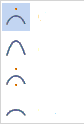
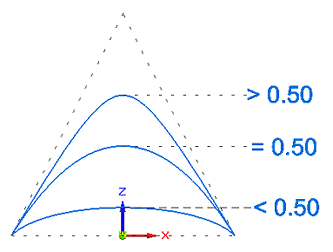

Conic command bar
- Style
-
Sets the active style.
- Line Color
-
Sets the drawing color. You can click the More option to define custom colors with the Color dialog box.
- Line Type
-
Sets the drawing line type and style.
- Line Width
-
Sets the line width.
- Conic Shapes
-
Specifies the basic curve shape to draw. Use the list to specify a hyperbola, parabola, or ellipse shape and its associated Rho values.

Note:As you click each shape in the list, its default Rho value is displayed.
Conic Shape
Default Rho value
Hyperbola
0.750
Conic
0.500
Parabola
(0.500 fixed)
Ellipse
0.250
- Rho
-
Defines the shape of the curve to create. The Rho value for a conic curve is required to be between 0.05 and 0.95 (both inclusive). When placing or editing the curve, you can change the default value for any curve except a parabola.
Note:Rho>0.5 (Hyperbola)
Rho=0.5 (Parabola)
Rho<0.5 (Ellipse)

How do I
Draw a curveDisplay the control polygon for a curve
Insert or remove points on a curve
Simplify a curve
Convert analytic geometry to a b-spline curve
Draw a conic curve
Edit a conic curve
Look up more details
Curve commandCurve command bar
Curve Options dialog box
Conic command
Simplify Curve command
Simplify Curve dialog box
Convert To Curve command